MARS ORBITAL GPS CONSTELLATION
Drag the 3D globe in 360° or click any surface landing beacon to descend into high-precision EVA surface navigation.
SOLAR TERMINATOR ANGLE
DAY / NIGHT

Drag the 3D globe in 360° or click any surface landing beacon to descend into high-precision EVA surface navigation.
Touchdown coordinates 18.4447°N, 77.4508°E. Anchors the 29,517×8,199 Mastcam-Z 360° panorama and 50m vertical nadir projection.
http://192.168.1.7:8080/?visor=1
Drag the circular UV/X-Ray lens across ROI-01..03 on the rock to inspect millimeter-scale redox rims and organic carbon vibrational peaks.